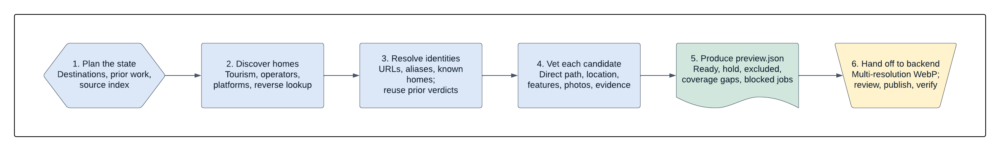
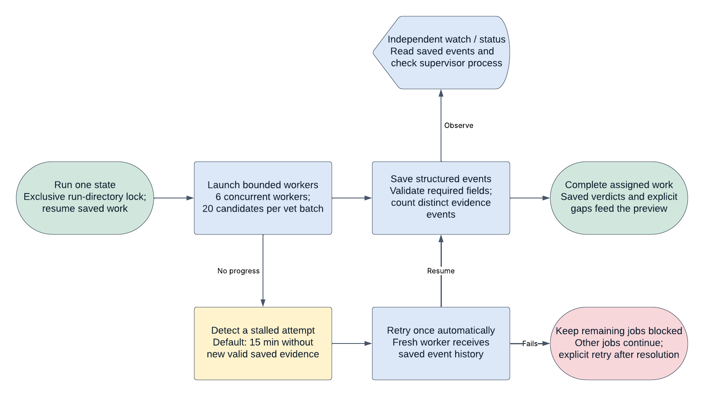

Pleasant Street
 Explore Pleasant StreetFree map · Direct website links
Explore Pleasant StreetFree map · Direct website links
- Role
- Founder, product and service designer
- Goal
- Free discovery for hosts; an acquisition channel for LAZY
- Status
- In production · Research still in flight
What exactly I did
founder, product strategy, UX and service design, prototype, AI research and evaluation workflow, and production pipeline.
I built Pleasant Street to help independent vacation-rental hosts become discoverable and create an acquisition channel for LAZY, my website-building product for hosts. Travelers find accommodation on a free map and follow links to hosts’ own websites. Everyone is welcome: hosts do not need to use LAZY to appear.
From prototype to production: I built the prototype with 17,000 places, handed it off to a system administrator, then built the pipeline so discovery and vetting could continue in production.
Still in flight. Nationwide research takes time. Catalogs must be searched, identities reconciled and incomplete evidence revisited. The project has now vetted 170,680 places across 30 states, with 20 states remaining.
Situation
A useful discovery product creates a relevant audience for LAZY.
Situation
A useful discovery product creates a relevant audience for LAZY.
The acquisition goal
LAZY gives hosts a website of their own. Pleasant Street addresses the connected problem: helping travelers find those independent rentals. I designed the two products around the same host community, linking consumer discovery with a concrete need for a useful property website. Pleasant Street is 100% free for travelers and hosts. Hosts keep their own websites, booking processes and guest relationships; using LAZY is entirely optional.
The intended acquisition path is destination discovery, visits to independent host websites, visible value for hosts, and qualified interest in LAZY. The commercial goal is host acquisition and activation; the inventory count measures research scale.

Select the diagram to open it full size.
A free map, with links to hosts’ own websites
Pleasant Street helps travelers discover places and visit the host’s own website. It is a map and discovery directory: the booking relationship stays with the host. Everyone is welcome, whether or not they use LAZY.
I compared it with U.S. rental advertising directories on the practical questions that matter here: where the traveler goes next, what the host pays for visibility, and who controls the relationship. These are useful comparisons, not identical products or a ranking by size.
| Directory | Coverage | Cost of visibility | Traveler’s next step |
|---|---|---|---|
| Pleasant Street | U.S.; 30 states researched, 20 remaining | 100% free for hosts and travelers. No LAZY purchase required. | Open the host’s own website from the map or property card. The host keeps their existing site, booking process and guest relationship. |
| FloridaRentals.com | Florida | Paid host subscriptions; no booking or service fees. Personal-website links are included above the Basic tier in its plan comparison. | Contact the owner or manager through the listing; website links are also offered. Rental arrangements and payments stay with the owner or manager. |
| WeNeedaVacation | Cape Cod, Martha’s Vineyard and Nantucket | Paid host advertising plans; no commissions or guest booking fees. | Contact the owner or manager using the listing’s contact form; the host chooses payment methods. The cited pages do not establish a universal outbound website-link policy. |
Competitor descriptions are based on their linked FAQs, pricing and contact pages, reviewed November 23, 2026. Direct contact, an external website link and an on-site booking flow are different handoffs; I have not treated them as interchangeable.
What this comparison shows: direct relationships already exist in rental advertising. FloridaRentals also offers host-website links, so that feature alone is not unique. Regional directories bring destination focus. Pleasant Street combines a free map, links to existing host websites and expanding U.S. coverage. Its research scale does not establish an advantage in traffic, bookings or conversion.
The connection to LAZY: Pleasant Street brings visibility to independent hosts for free, including hosts who never become LAZY customers. LAZY is an optional way to build their web presence. The acquisition hypothesis is that useful, unconditional visibility can earn interest in LAZY; that commercial outcome still needs to be measured.
Task
Preserve judgment across models, workers and production handoffs.
Task
Preserve judgment across models, workers and production handoffs.
Model roles
I developed a division of labor through hands-on use. ChatGPT was more useful to me for strategic framing and vetting: structuring the problem, challenging assumptions and judging evidence against the product’s goals. Claude was more useful to me for search and discovery: working through fragmented rental inventories and collecting candidate properties.
These are perceived strengths within my working process, rather than a universal benchmark. The supplied Python harness currently launches Codex CLI workers; the ChatGPT–Claude division describes my broader working method.
Explicit handoffs, with evidence attached
- Strategy to search. A bounded assignment carries destination scope, source priorities, eligibility rules, completed research and unresolved pagination. The next model knows where to work and what evidence to return.
- Search to vetting. Candidate properties arrive with source URLs, geographic context, catalog boundaries and access gaps. A discovered URL stays a candidate until evidence establishes its accommodation identity, location and operator-controlled direct path.
- Vetting to follow-up. A hold carries the evidence, the unresolved question and the next check. Follow-up targets the missing fact instead of repeating the investigation.
- Prototype to production. I built the 17,000-place prototype, handed it to a system administrator and built the pipeline to continue research and vetting in production.
- Frontend to backend. After discovery and vetting, the frontend workflow transfers the vetted records into the backend. The backend prepares images in multiple resolutions as WebP for publication.
- Prepared data to publication. The exact batch passes through preview, importer dry run, review and live verification. Found, vetted, image-prepared and published remain distinct states.
Evidence contracts and controlled inference
I treated the research as evidence-grounded information extraction, entity resolution and decision orchestration. A direct-booking website does not establish owner operation. Several URLs do not establish several homes. A generic pets selector does not establish the property’s pet policy. Source scope and property identity must survive every handoff.
I defined separate states for discovered candidates, verified websites, holds, unavailable sources and exclusions. Unknown values stay unknown. Photographs require attribution to the specific property; operator-wide information applies only where that relationship is supported.
Action
A recoverable AI pipeline behind a deliberately friendly interface.
Action
A recoverable AI pipeline behind a deliberately friendly interface.
The harness, plainly explained
The harness is the control system around the AI workers. It determines their assignments, what they must save, how progress is recognized and what happens when an attempt stalls.
It plans a state’s destinations, searches source catalogs, reconciles URLs and aliases, removes known inventory and reuses saved vetting decisions. Remaining candidates receive a bounded vetting assignment. The output is a review preview containing ready records, holds, exclusions and coverage gaps.

Select the diagram to open it full size.
Orchestration, evaluation and recovery
The Python harness implements bounded concurrency, structured JSONL event ingestion, schema and value checks, checkpoint recovery, alias-based entity reconciliation and an exclusive run-directory lock. The production workflow uses six concurrent workers; vetting batches contain 20 candidates.
An attempt that produces no new valid saved evidence for 15 minutes receives one automatic recovery attempt. A fresh worker inherits the saved history. Remaining blocked jobs stay explicit while other work continues; an independent monitor reads the progress record and checks the supervisor process.
Progress depends on distinct, valid evidence events. Repeated prose does not reset the clock. Structural validation checks the record’s required contract; factual verification still depends on inspecting the underlying sources. That distinction keeps machine-checkable completeness separate from semantic correctness.

Select the diagram to open it full size.
Backend image preparation
Discovery and vetting hand the property records to the backend, which prepares the images for publication as WebP variants at multiple resolutions. This separates research and eligibility decisions from media processing and delivery, allowing the production pipeline to continue beyond the prototype.
Deliberately “uncool”: a friendly golden age
I deliberately chose an “uncool” visual direction: no glass surfaces, minimal microanimations and a friendly language drawn from 1950s design. My intention was to evoke the optimism and familiarity of a golden age of vacations: welcoming places, human hospitality and the pleasure of going somewhere.
The script wordmark, serif typography, turquoise palette, rounded controls and illustrated houses carry that idea. The interface should feel approachable and settled. Motion is restrained so the homes, geography and next action remain the focus.
From pins to numbered circles
A map full of individual pins becomes difficult to read as inventory grows. Numbered circles summarize dense groups while individual pins preserve specific locations. The map can communicate both where the homes are and how much choice an area contains.
The current implementation groups results in screen space and applies filters before grouping. At extreme overlap, cards provide a readable alternative to an unreadable fan of pins. Featured homes retain a separate coral-pin treatment.

Different ways to find the same home
Map and cards support geographic exploration and visual comparison. Plain-language filters expose the essentials: capacity, accommodation type, children and pets. Property details and an explicit outbound action connect the selected home to its operator’s site. The mobile views preserve these same tasks within a smaller screen.


Result
17,000-place prototype. 170,680 places vetted. Production continues.
Result
17,000-place prototype. 170,680 places vetted. Production continues.
An operating product, still expanding
The prototype established the experience with 17,000 places. After the system-administrator handoff, I built the pipeline to continue discovery and vetting in production. The project has now vetted 170,680 places across 30 states.
The remaining 20 states, unresolved evidence and ongoing catalog changes make this continuing work. The pipeline preserves checkpoints and explicit coverage gaps so an interruption or a new worker does not erase what has already been learned.
My design contribution
I connected a commercial acquisition goal to product UX and an operational AI workflow: task decomposition, source grounding, evaluation criteria, entity resolution, explicit uncertainty states, bounded recovery, production handoffs and backend media preparation.
My goal throughout was simplicity and reliability: make complex research manageable behind the scenes, while the experience of finding an independent place to stay feels friendly and straightforward.